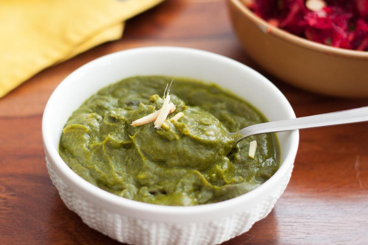

Back to States
Kafuli

Ingredients
- 2 bunches spinach, chopped
- 1 bunch fenugreek leaves, chopped
- 2 green chilies, finely chopped
- 1 inch ginger, grated
- 4-5 garlic cloves, minced
- 1 onion, finely chopped
- 2 tbsp rice flour
- 1 tsp cumin seeds
- 1/2 tsp turmeric powder
- Salt to taste
- 2 tbsp ghee
- Water as needed
Instructions
1. Wash and chop spinach and fenugreek leaves finely.
2. Heat ghee in a pan, add cumin seeds and let them crackle.
3. Add chopped onions, ginger, garlic, and green chilies. Sauté until golden.
4. Add chopped greens and cook until wilted.
5. Add turmeric powder and salt. Cook for 5 minutes.
6. Make a paste of rice flour with water and add to the greens.
7. Simmer for 10-15 minutes until thick.
8. Serve hot with mandua ki roti (finger millet flatbread).